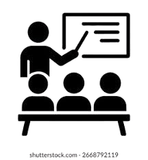

Matutino
08h às 11:30

Presencial
Coordernação Prof. Me. Edson Company Calito Junior
E-mail f111coord.dss@cps.sp.gov.br
Entre as diversas disciplinas do curso estão matemática para computação, álgebra linear, redação técnica e ética profissional e patente, metodologias ágeis para gestão de projetos de software e inglês. O currículo inclui ainda conhecimentos mais específicos da área, como lógica de programação e algoritmos, programação para desktop, dispositivos móveis e para web. Experiência da usináo computação é um ambiente industrial artificial, sua preparação da informação, internet das coisas, banco de dados e engenharia de software também abrangem programação e controle. O técnico de informática da informática do curso aprende a analisar e a identificar problemas, aplicar métodos e análise estatística de dados para apoiar clientes nas tomadas de decisão. Outra atribuição da área é a coordenação de projetos e equipes de desenvolvimento de software. O profissional pode projetar, desenvolver e testar softwares para múltiplas plataformas, aplicações em nuvem e internet das coisas. Entre outras habilidades, cabe ao especialista a apresentação de soluções tecnológicas a partir de conceitos, métodos e tecnologias de linguagens de programação, banco de dados, engenharia de software, segurança da informação e inteligência artificial.